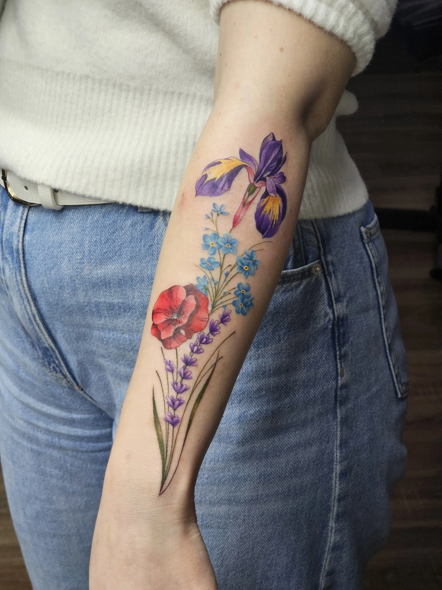
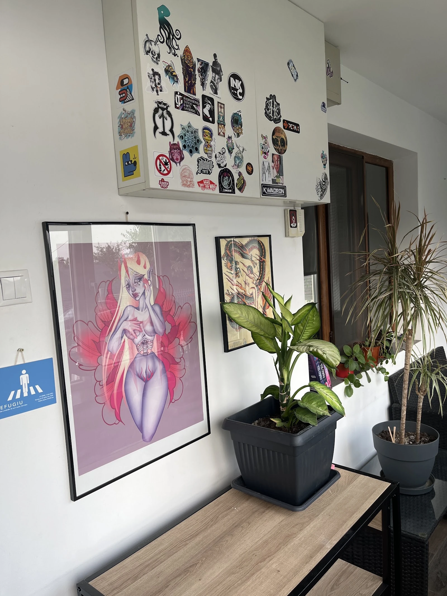

INKCULTURAtattoo & piercing studio · Iași
{{Pielea ta, desenul tău. Noi punem tușul.|Your skin, your design. We bring the ink.|A sua pele, o seu desenho. Nós pomos a tinta.}}
{{Spune-ne unde, cât de mare și ce ai în minte. Completezi o fișă în două minute, iar mesajul pleacă gata scris pe WhatsApp sau SMS.|Tell us where, how big and what you have in mind. Fill in a sheet in two minutes and the message goes out ready-written on WhatsApp or SMS.|Diga-nos onde, que tamanho e o que tem em mente. Preenche uma ficha em dois minutos e a mensagem segue pronta por WhatsApp ou SMS.}}
5,0{{93 de recenzii pe Google · Strada Florea 16|93 Google reviews · Strada Florea 16|93 avaliações no Google · Strada Florea 16}}

{{lucrări și studio|work and studio|trabalhos e estúdio}}
{{Tușul, așa cum stă pe piele.|Ink, the way it sits on skin.|A tinta, tal como fica na pele.}}
{{Fotografii reale din studio: lucrări făcute aici și cum se lucrează. Apasă pe o foaie ca s-o vezi mare.|Real photos from the studio: work done here and how it’s done. Tap a sheet to see it large.|Fotografias reais do estúdio: trabalhos feitos aqui e como se trabalha. Toque numa folha para a ver maior.}}
{{cerere de tatuaj sau piercing|tattoo or piercing request|pedido de tatuagem ou piercing}}
{{Fișa ta de stencil.|Your stencil sheet.|A sua ficha de stencil.}}
{{Alegi zona, mărimea și stilul. Fișa din dreapta se completează singură. Nu se trimite nimic până nu apeși pe butonul de WhatsApp sau SMS.|Pick the area, size and style. The sheet on the right fills itself in. Nothing is sent until you press the WhatsApp or SMS button.|Escolha a zona, o tamanho e o estilo. A ficha à direita preenche-se sozinha. Nada é enviado até carregar no botão de WhatsApp ou SMS.}}
{{Mărimile sunt orientative; desenul și ora se stabilesc cu studioul.|Sizes are approximate; the design and time are agreed with the studio.|Os tamanhos são orientativos; o desenho e a hora combinam-se com o estúdio.}}
{{Se deschide aplicația ta, către 0737 827 176. Preferi să vorbești? Sună acum.|Your app opens, addressed to 0737 827 176. Prefer to talk? Call now.|A sua app abre, para 0737 827 176. Prefere falar? Ligue agora.}}
{{recenzii Google · 5,0 din 93|Google reviews · 5.0 from 93|opiniões Google · 5,0 em 93}}
{{Ce spun cei care au stat sub ac.|What people say after the needle.|O que dizem depois da agulha.}}
Am fost astazi pentru primul meu tatuaj la Duwi, care a facut o treaba excelenta. Totul a decurs perfect si sunt super super multumit de rezultat. Sper sa ma intorc curand. Multumesc mult!
Am ales salonul lor pentru primul meu tatuaj și a fost cea mai buna alegere! Mi-a plăcut atât de mult experienta, încât mi-am mai făcut unul la 3 săptămâni distanta!!
Am facut o programare pentru un septum piercing la Aco și am avut o experiență foarte bună.
{{Fragmente din recenzii Google, în limba originală.|Excerpts from Google reviews, in the original language.|Excertos de avaliações do Google, no idioma original.}}

{{studio|studio|estúdio}}
{{Strada Florea 16, Iași.|Strada Florea 16, Iași.|Strada Florea 16, Iași.}}
- {{Potrivit pentru comunitatea LGBTQ+|LGBTQ+ friendly|Adequado à comunidade LGBTQ+}}
- {{Companie deținută de o femeie|Woman-owned business|Empresa detida por uma mulher}}
- {{Telefon|Phone|Telefone}}
- 0737 827 176
- {{Adresă|Address|Morada}}
- Strada Florea 16, 700259 Iași
- {{Program|Hours|Horário}}
- {{Luni 12:00–19:00 · restul zilelor|Monday 12:00–19:00 · other days|Segunda 12:00–19:00 · restantes dias}} {{de confirmat|to be confirmed|a confirmar}}